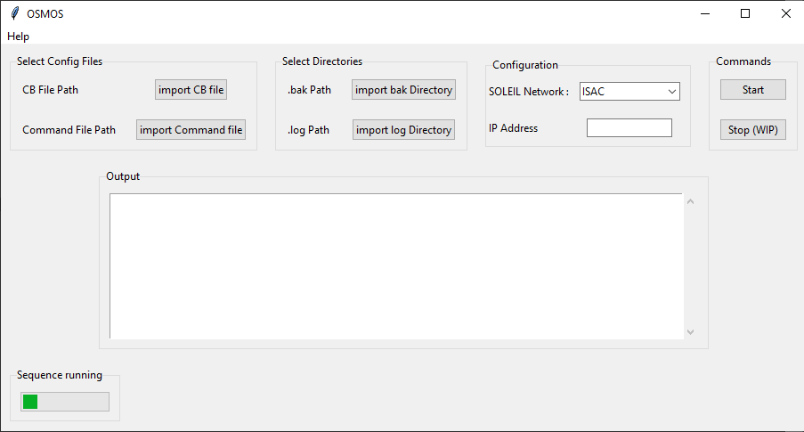
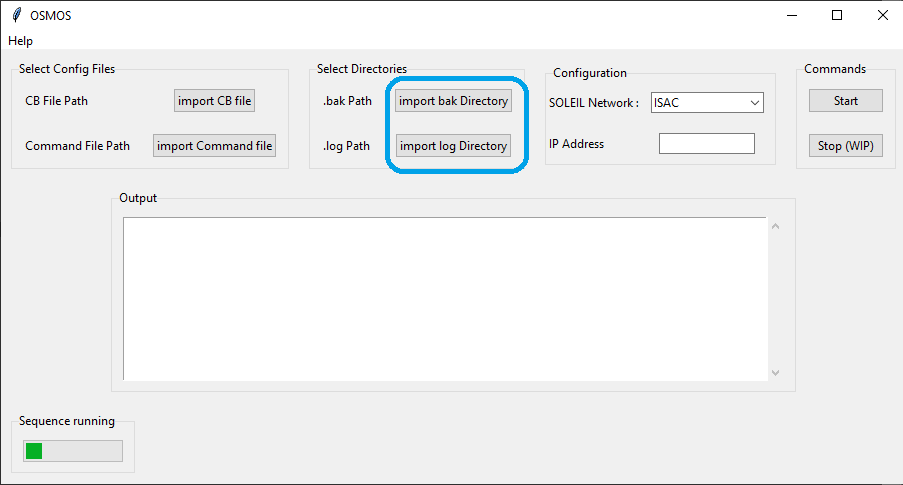
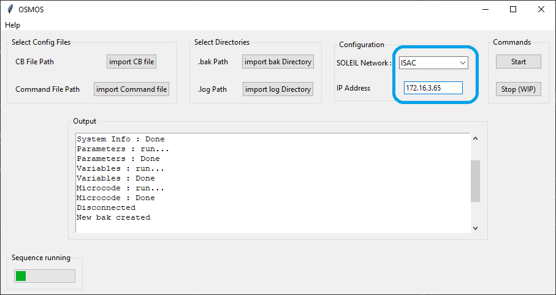
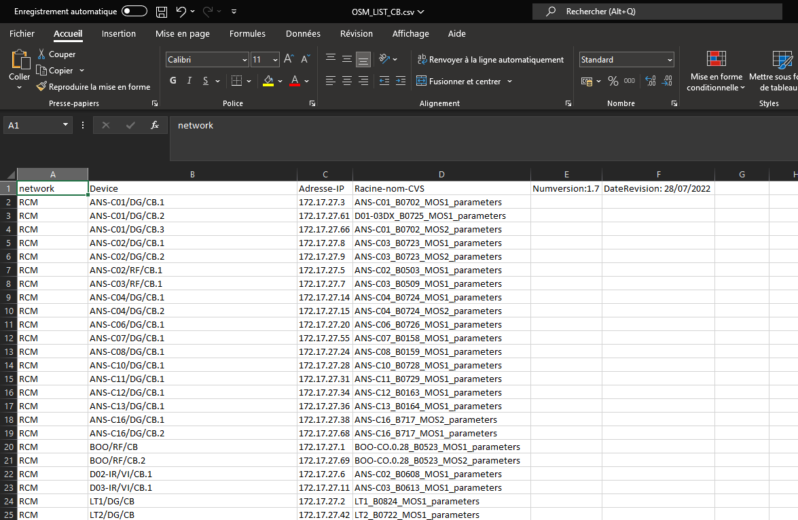
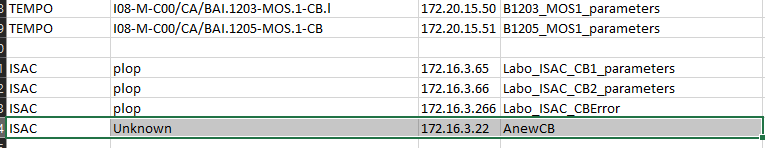

OSMOS UserGuide (WIP)#
WELCOME HERE! This documentation intend to show you how to use the OSMOS software
1. Description#
OSMOS is a tool wich can communicate with the GALIL controllers of SOLEIL,
extract the parameters/variables/microcode and write the into a .bak file
This file is parsed according to GALIL format allowing to upload those settings into the controller
A .log file is generated indicatig if everything went right during the download
The user can configure the software through 2 .csv files wich are described below
2. Software presentation#
How FileManagement has been designed is represented by the software architecture below:
{kind=link}
The software is splitted in 5 main parts:
“Select config Files”, where you can shange
.csvfile if you need“Select Directories”, where you can choose a different location to save the
.bakand.logfiles.- “Configuration”, where you choose wich network to save or you can enter a specific IP adress of a ControlBox
Note
Whatever the network, IP Address is treated in priority. Keep it empty to treat the network of you choosing
- “commands”, where you can start the sequence.
Note
As noted, the stop button is not implemented. It will come in a futur update.
“Output”, where you can have information during the sequence.
3. Select the configuration Files#
If you want, you can select the configurations files. These files consist on
2 .csv files called:
OSM_LIST_CB.csv wich represent roughly the parameters available in a ControlBox
OSM_LIST_CDE.csv wich list all controlbox in SOLEIL according to their network and physical locations
{kind=link}
Note
choosing new files is not mandatory. If they are not manually given, OSMOS will take the default files located in “OSMOS/Documentation/Reference”
Danger
Never delete the reference files! OSMOS may crash instantly as it doesn’t have any reference to use!
To select new files you may just click on “import CB file” button or “import Command file” button and choose your new file
Hint
You can try it out with the path given in the picture below:
OSMOS/Test/altern_CB_Path
OSMOS/Test/altern_Cde_Path
{kind=link}
Warning
Be careful on wich file you load. CB file and command file can’t be swapped. This can result in crash or non-functioning behavior as it won’t find the informations it needs inside the document.
4. Select where the files will be saved#
You can, if you want, change the directory in wich directories the .bak and .log are saved.
To select new directories you may just click on “import .bak directory” button or “import .log directory” button and choose your new directories
{kind=link}
Note
These files can be put in the same directory or not. Directory management is automatic.
{kind=link}
If a IP adress is given, no networtk directory will be created inside the path chosen as it is disabled in this case (see 5. Network and/or IP address )
Note
No information will be given to the user when changing the directory but it will be given to a developper through the standard output (interpreter).
Important
Changing the directory is not mandatory. There is defaults paths wich are:
OSMOS/Sources/.bak and OSMOS/Sources/.log
5. Network and/or IP address#
By default, ad with the current “CB file”, the default network is “ISAC”. If a network is added in the file after ISAC then, this network will be the default one.
{kind=link}
Note
This drop-down menu can’t be empty. It will amways have the value of the last network in the file
As said previously, the text field “IP adress” has priority. If this field is not empty then, OSMOS will get the informations of this specific Controlbox and will ignore the network.
Warning
IP address text field is not yet protected if a wrong format is written.
the requiered format is xxx.xxx.xxx.xxx. I.e : 172.16.3.65.
{kind=link}
6. How to use OSMOS#
1. Abstract#
Using OSMOS is pretty simple. If you want to use all default parameters and directories, do not change anything in “Select config Files” part, neither in “Select directories” part.
From here, you may want to save a specific controlbox parameter so you enter an IP adress or you want to upload paramters from controlboxes placed in a specific network.
using a SOLEIL network:#
Connect to one of the SOLEIL networks following 2. Connect to SOLEIL network.
Choose the network in the drop-down menu.
Press the “start” button in “Commands” field.
Wait for the “End of work” in the
output
You now, should have a directory having the name of your network in OSMOS/Sources/.bak and OSMOS/Sources/.log.
using an IP address:#
Connect to one Controlbox following 2. Connect to SOLEIL network.
enter th IP address of the controlbox you are connected to in IP address
Press the “start” button in “Commands” field.
Wait for the “End of work” in the
output. See
In this case, you should have a .bak file in OSMOS/Sources/.bak wich
include the IP address in the name.
same thing for the .log file in OSMOS/Sources/.bak.
2. Connect to SOLEIL network#
There is 2 ways to connect to a SOLEIL controlbox through OSMOS:
You can connect directly to a controlbox using an ethernet câble
OSMOS is installed on a windows equipement wich has an access to a control network of SOLEIL
connecting directly to a Controlbox#
Connect directly to a Controlbox requires to know the IP address. Controlboxes at SOLEIL are configured with fix IP address.
Hint
If you don’t know the IP address, you can use GalilSuite software. This software uses a detection function. It is not entirely reliable but it can help.
connect to Controlboxes in networks#
Being able to informations from controlboxes from a SOLEIL network require OSMOS to be installed on a machine wich has access to these networks.
For example, if OSMOS is installed on CPCI Crate based on a beamline then, you can generates the docs for this specific beamline.
3. How to configure the CB File#
The CB file contains all controlboxes placed in any SOLEIL control network.
{kind=link}
This file is splitted in 4 main columns:
“network” represent the name of the control network the controlboxes are in.
“device” is the tango device name of the controlboxes
“Addresse-IP” is pretty clear
“racine-nom-cvs” represent the name of the backup file archived in CVS repository
Warning
It is highly recommended to NOT change “racine-nom-cvs” for the reason that this name is the reference for the versionning of the file. If you have any doubt, contact the coordination Pole of ISAC service.
You can add a new network by adding every informations wherever you want in the file.
Note
The down-drop menu will automatically take the last network of the file by default. If you want to keep “ISAC” as default network, I recommend to let it at the end of the file.
{kind=link}
To add a Controlbox in a specific network, just add it at the end of any network. For readability, try to keep the empty lines in between of each network.
{kind=link}
Important
Do not let any field empty in your lines as OSMOS will crash. If you don’t know the name of the device, write “unknown” for example.
A full line can be let empty though (i.e the lines in between networks)
Attention
Do not let the file open while using OSMOS. It will be protected in a futur update.
4. How to configure the Cde File#
Attention
This part has to be refactored as it is too complex and not robust enough.
It is mainly caused by the fact some of GALIL parameters are “exceptional”
and need to be “read”, “set” and write in .bak in a unique way.
The Command file contains the Galil parameters you want to save in the .bak
Note
Not all parameters are put in the file only the one that are necessary for GALIL systems to run and those specific to SOLEIL.
The command file is composed of 9 main columns :
“parameter” wich is the name of GALIL parameters
“Firmware” describes on wich Galil firmwares these firmware are availables.
“type-getparam” category to get the parameter from the controlbox /!\
“type-setparam” category to set the parameter to the controlbox /!\
“type-wrtbak” category to write the parameter in the
.bakfile /!\“get” The actual way to get the parameter from the controlbox /!\
“set” The actual way to set the parameter to the controlbox /!\
“write” The actual way to write the paramter in the
.bak/!\“function” description of the parameter
{kind=link}
Before adding a parameter, you need to know all the informations related to it. To know the “get” and “set” part, you can find the information directly from GALIL. You can find wich firmware is available with that parameter as well.
https://www.galil.com/downloads/manuals-and-data-sheets
Note
You will need a GALIL account though
For the “write” column, you will need to test it generating a .bak from GALILSuite.
If the parameter is not generated using GALILSuite, you will need to modify the xml file from GALILSuite
wich is a complex procedure and not the point of this documentation.
Important
Do not let any field empty in your lines as OSMOS will crash. If you don’t know the name of the device, write “unknown” for example.
A full line can be let empty though
Attention
Do not let the file open while using OSMOS. It will be protected in a futur update.